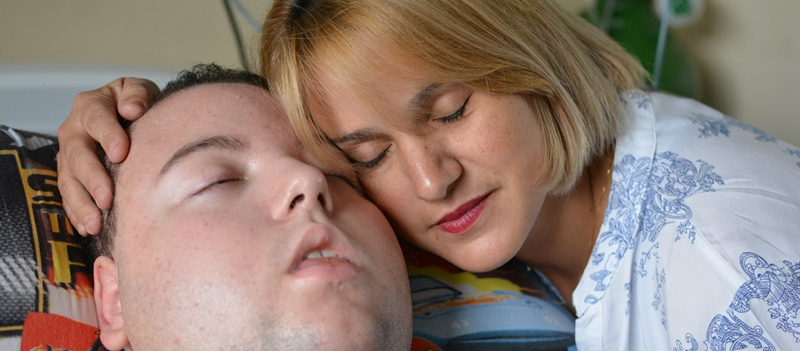
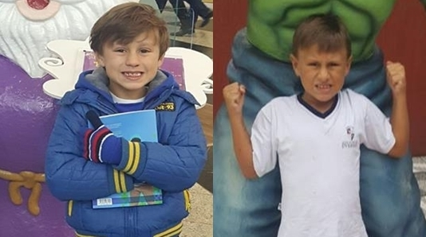
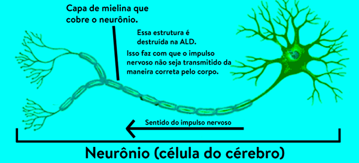
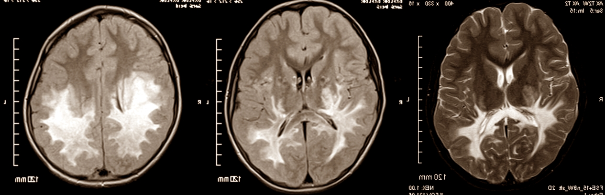
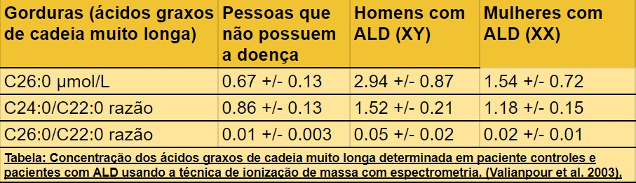
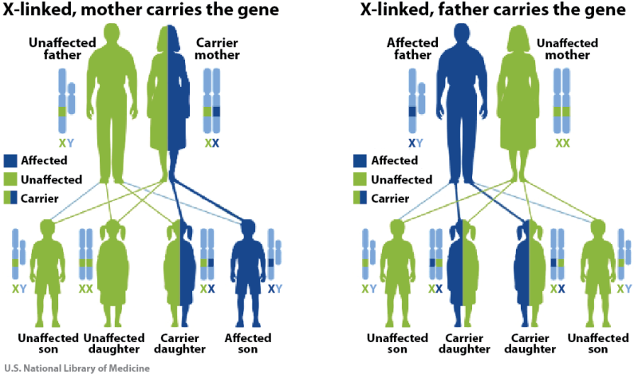

O que é adrenoleucodistrofia?
A palavra “adrenoleucodistrofia” é longa e, em um primeiro momento, parece difícil de ser compreendida. Ela assusta qualquer pessoa que não conheça o seu significado – e grande parte das pessoas nunca ouviu falar dela. Apesar disso, a palavra representa a doença retratada no famoso filme “Óleo de Lorenzo”.
O filme conta a história de Augusto e Michaela Odone, pais de Lorenzo. O menino desenvolve a adrenoleucodistrofia na década de 80 e, a partir disso, seus pais começam a buscar tratamentos e alternativas que não existiam na época. Mas o que realmente é a adrenoleucodistrofia? O que significa essa palavra?
“Adreno” faz referência às glândulas adrenais – também conhecidas como suprarrenais –, que ficam localizadas acima dos nossos rins, e secretam alguns hormônios essenciais ao funcionamento do organismo. A palavra “leuco”, do grego, significa branco. Ela faz referência à substância branca que é localizada, principalmente, no interior do cérebro. Essas duas estruturas são afetadas pela doença. Por fim, a palavra “distrofia” é usada quando alguma estrutura do nosso corpo não se desenvolve da maneira correta.
Em resumo, adrenoleucodistrofia é uma doença que faz com que as glândulas adrenais não funcionem da maneira que deveriam e que a substância branca do cérebro se degrade. Ela também é definida como uma doença progressiva, genética e hereditária. Mas o que significa tudo isso?
Ela é progressiva porque os sintomas aparecem com o passar do tempo e sempre vão progredindo, ou seja, quanto mais tempo sem tratamento, mais grave ela se torna. No começo, os sintomas mais frequentes são uma mudança no comportamento, que torna o indivíduo mais agressivo e agitado, e a mudança na cor da pele: as crianças ficam mais bronzeadas por conta dos problemas na glândula adrenal. Com o passar do tempo, os sintomas podem evoluir para quedas, uma dificuldade grande para andar, perda da visão e da fala e, mais para frente, perda da capacidade de respirar e de se alimentar.
Para conhecer os sintomas de forma detalhadas, clique aqui.
A adrenoleucodistrofia é uma doença genética. Isso significa que ela é causada por uma alteração no material genético – o DNA – da pessoa afetada. Os cromossomos são estruturas que guardam esse material dentro das células. O ser humano possui 46 cromossomos, sendo que 23 vem da mãe – do óvulo – e 23 do pai – do espermatozoide. Entre todos eles, temos dois cromossomos especiais: os sexuais. São ele que fazem a diferenciação entre homem e mulher no caráter genético. A mulher possui os dois sexuais iguais – ambos são “X”. Já o homem possui eles diferentes – um é “X” e o outro é “Y”.
A alteração que causa a adrenoleucodistrofia está localizada no cromossomo sexual “X”. Sendo assim, a forma grave da doença só afeta homens porque mesmo que as mulheres tenham a alteração, elas continuam possuindo uma outra cópia igual – o que não acontece com os homens, que possuem apenas um “X”.
Por fim, ela é classificada como hereditária porque é transmitida entre gerações – de mãe para filho, por exemplo. Uma mãe que possua a alteração e um pai sem alteração possuem 50% de chance de ter um filho homem com a doença e 50% de chance de ter uma filha mulher que possua a alteração, mas não tenha a doença. Se o pai tiver a doença e a mãe não for portadora da alteração, a chance de ter um filho homem doente é de 0% e a chance de ter uma filha mulher com a alteração é de 100%.
Para entender como funciona a questão genética de uma maneira detalhada, clique aqui.
A adrenoleucodistrofia possui duas formas mais conhecidas. A mais grave afeta as crianças entre os 5 e 14 anos. A outra forma, também grave, mas com uma evolução mais lenta dos sintomas, afeta homens adultos na faixa de 30 anos – é chamada pelo nome de “adrenomieloneuropatia”. Existem ainda as formas neonatal, que afeta crianças recém-nascidas, e também uma forma que afeta as mulheres – elas apresentam sintomas mais leves, que aparecem na fase adulta resultando em fraqueza das pernas, principalmente.

Além de tudo isso, a doença é conhecida por não ser diagnosticada com facilidade. Ela é considerada uma doença rara – de acordo com o Ministério da Saúde. A Organização Mundial da Saúde afirma que uma doença é rara quando afeta até 13 pessoas entre 20 mil indivíduos. No caso da adrenoleucodistrofia, é estimado que ela atinja 1 a cada 20 mil pessoas.
Por ser rara, ela não é trabalhada com profundidade nas faculdades da área da saúde e, muitas vezes, o diagnóstico demora para ser feito. O problema é que, como é uma doença progressiva, o tempo é essencial para o tratamento.
Atualmente, existe apenas uma forma de tratamento definitivo para a doença: o transplante de medula óssea. O grande problema é que ele só pode ser feito nos estágios iniciais – ele serve apenas para frear o avanço da doença, mas não consegue recuperar os danos que já foram causados nas glândulas adrenais e no cérebro.
Uma outra complicação é que o transplante possui muitos riscos e muitas dificuldades. A primeira delas é em relação ao doador: a medula óssea é diferente de uma pessoa para outra, então é muito difícil encontrar uma pessoa que possa doar e seja compatível com você. Fora isso, a pessoa transplantada passa por um período muito grande com o sistema imunológico afetado – ou seja, sem as defesas do organismo – e fica muito suscetível a infecções e outras doenças.
Outra possibilidade de tratamento é o famoso “Óleo de Lorenzo”, que retrata a saga de Augusto e Michaela Odone, para tentar curar o filho, diante de um diagnóstico para o qual, nos anos 80, não existia nenhum tratamento. Seus pais, apesar de não possuírem formação médica, se debruçaram na literatura e conseguiram criar o óleo que ajuda a desacelerar os danos causados pela doença.
Infelizmente, algum tempo depois, ficou comprovado que, mesmo de uma maneira mais lenta, a doença continua evoluindo. Ou seja, não é possível tratar apenas com esse composto. Existem também alguns tratamentos experimentais em fase de teste, como a terapia gênica, que prometem uma cura definitiva – mas que ainda estão longe da realidade de aplicação.
Para entender quais são as opções de tratamento de forma detalhada, clique aqui.
Quer saber mais?
Para ver os sintomas de forma detalhadas, clique aqui.
Para entender quais são as opções de tratamento de forma detalhada, clique aqui.
Para entender quais são as alterações que acontecem dentro do corpo, clique aqui.
Para entender como funciona a questão genética de uma maneira detalhada, clique aqui.
Para saber mais sobre o texto do pezinho, clique aqui.
Quais são os sintomas da adrenoleucodistrofia?
Como mostramos na seção principal sobre a doença, a adrenoleucodistrofia é uma doença progressiva, ou seja, os sintomas vão aparecendo e piorando com o passar do tempo.
Normalmente, o primeiro sintoma notado pelas famílias e pelos médicos é a mudança de comportamento das crianças. Na grande maioria dos casos, as crianças têm um desenvolvimento normal até, aproximadamente, os 6 anos de idade. Nesse período, elas começam a desenvolver um comportamento muito mais agitado e agressivo do que o normal.
Dra. Mara Lúcia, neuropediatra e especialista em doenças raras: “Eles começam nessa faixa etária de 3 anos mais ou menos, com um pico máximo de 6/7 anos, onde eles são normais, e começam com dificuldade escolar; muitas vezes, são crianças que tinham um aprendizado e de repente começam a perder um pouco a aquisição do aprendizado. Então sabiam matemática básica, como fazer continhas, e de repente perdem isso. Sabiam ler e escrever e de repente vai ficando difícil essa leitura e essa escrita. E alguns não apresentam problemas cognitivos, mas sim mudam comportamento. Começam a ficar agitados, não ficam parados na carteira, ficam desatentos, às vezes sendo confundidos com transtorno de deficit de atenção e hiperatividade.”
Usualmente, é a partir desse momento que a família é chamada na escola para ser informada desses problemas. Como aconteceu no caso da Linda Franco, da Laura Pinheiro e da Patrícia Lasmar, mães de crianças que apresentavam os primeiros sintomas, a escola sugere que a criança seja acompanhada por um pedagogo ou psicólogo. É muito difícil fazer o diagnóstico apenas com esses sintomas, mas é um sinal de alerta.
Com o tempo e com a evolução da doença, os outros sintomas vão surgindo. Um dos mais característicos é um bronzeado artificial na pele – muitas vezes ignorado por conta do período que a criança passa brincando no sol.

A partir desse momento, o diagnóstico vira uma corrida contra o tempo. As crianças passam a ter quedas frequentes, dificuldade para andar e também problemas na coordenação motora. Esse é um sinal de que a doença está afetando mais o cérebro. Dependendo do caso, essa progressão pode levar dois anos ou dois meses – por isso, o tempo é uma questão chave.
Nisso, os sintomas começam a piorar e os danos no cérebro vão se tornando mais graves. A criança passa a ter dificuldade para enxergar e, eventualmente, fica cega. Depois disso, perde a habilidade de falar e fica muda. Um tempo depois, começa a ter dificuldade para movimentar as pernas, os braços e a cabeça – até um momento em que não consegue mais realizar essas atividades básicas.
A doença não para, continua progredindo e danificando o cérebro. Por fim, os sistemas do corpo começam a parar de funcionar um por um. O sistema respiratório desliga e obriga o paciente a viver com aparelhos que ajudam na respiração; o sistema digestivo vai parando e faz com que a criança não consiga mais comer, obrigando ela a receber a alimentação por uma sonda que vai direto na barriga.
Nesse momento, como os danos já foram causados, não existe possibilidade de reversão do quadro. Os tratamentos deixam de ser curativos e passam a ser paliativos, com o objetivo de dar qualidade de vida.
Portanto, os sintomas da adrenoleucodistrofia nas crianças podem ser resumidos como:
- Mudança no comportamento (criança agitada e agressiva)
- Quedas frequentes e dificuldade para andar
- Problemas de visão
- Problemas na fala
- Pele bronzeada
Nos adultos
No caso dos adultos que possuem adrenoleucodistrofia, o quadro é bem diferente. Durante toda a infância e a juventude, eles não desenvolvem nenhum sintoma e vivem todo esse período de maneira normal.
Perto dos 30 anos, eles passam a sentir uma certa dificuldade para correr e andar, além de começar a perder o controle das pernas. Leandro Galuski conta quando começou a sentir uma fraqueza nas pernas:
“Quando eu ia correr no parque eu sentia que corria um determinado tempo e daí minhas pernas começavam a ficar cansadas. Só as pernas, eu tava com a respiração boa ainda, tava com fôlego e as pernas cansadas.”
Com o tempo, a dificuldade para andar começa a aumentar e os pacientes passam a ter dificuldade para movimentar as pernas – é como se os músculos fossem endurecendo e ficassem paralisados. Eles também passam a ter dificuldades para controlar a urina e o esfíncter.
O que causa a adrenoleucodistrofia?
A adrenoleucodistrofia é uma doença complexa de ser entendida. Ela é uma doença genética e ocorre por conta de uma alteração no DNA da pessoa afetada. Essa mutação acontece em uma parte específica do cromossomo sexual “X”, o gene ABCD1.
A alteração faz com que o corpo pare de produzir uma proteína conhecida como “proteína ALD” ou “ALDP”. A função completa dessa proteína no organismo ainda não é totalmente entendida pelos médicos, mas se sabe que quando ocorre uma mutação e ela deixa de ser produzida, alguns tipos de gorduras – os famosos ácidos graxos de cadeia muito longa – não conseguem ser destruídos e começam a se acumular dentro das células do corpo.
Essa destruição das gorduras, que ocorre para que a célula utilize as moléculas para outras finalidades, é realizada em uma parte específica da célula chamada de peroxissomo. O acúmulo dessa gordura é tóxico para algumas células do corpo – mais especificamente as células da substância branca do cérebro e das glândulas adrenais.
A toxicidade faz com que a bainha de mielina que protege o neurônio – uma espécie de “capa de revestimento” que faz com que os impulsos nervosos passem pela célula – seja destruída e, com isso, ocorrem lesões no cérebro. Quando afeta a glândula adrenal, faz com que ela pare de funcionar corretamente, causando a chamada “Doença de Addison” – em que um dos sintomas é o escurecimento da pele.

É importante frisar que essas gorduras são produzidas pelo nosso corpo, mas também são ingeridas pela alimentação. Ou seja, quanto mais alimentos que possuem esses ácidos em sua composição uma pessoa com adrenoleucodistrofia ingerir, mais rápido os sintomas vão aparecer. O “óleo de Lorenzo” é um composto formado por outros tipos de gorduras que conseguem ser destruídos pelo corpo e funciona como uma alternativa para repor essas substâncias.
Exames
Para identificar a adrenoleucodistrofia, existem alguns exames que podem ser feitos. O primeiro deles é a ressonância magnética de crânio e de medula. Ela é pedida para verificar se existem ou não lesões na substância branca cerebral e na medula espinhal. Esse é um exame não tão complexo e que é realizado na rede pública e privada de saúde.
A lesão da adrenoleucodistrofia é muito característica, tendo um formato parecido com uma borboleta no cérebro – por conta disso, a borboleta é um dos símbolos da doença.

Caso existam lesões que sugiram a adrenoleucodistrofia, o médico pode pedir um exame de sangue com o objetivo de medir os ácidos graxos de cadeia muito longa. Uma pequena amostra de sangue pode dizer se os níveis estão acima do normal, ou seja, se esse tipo de gordura não está sendo usado pelo corpo da maneira certa – caso não esteja, esse é um sinal de alerta para a adrenoleucodistrofia.

Por fim, também existe a investigação genética para descobrir se a pessoa possui a alteração no gene ABCD1. Esse exame é muito mais caro que os anteriores e não é realizado pela rede pública de saúde – precisa ser pago na rede privada.
Porém, o principal diferencial na questão do diagnóstico é o médico conhecer a doença. De acordo com Mara Lúcia Schmitz, médica do Hospital Pequeno Príncipe e especialista em Doenças Raras, o médico só pode fazer o diagnóstico do que ele conhece. “Então assim, se você não viu a doença, nunca pensou nela, você não vai solicitar esses exames”, afirma.
Por isso, o trabalho de divulgação da doença, principalmente em faculdades da área da saúde, é muito importante. Esse é um trabalho que vem sendo feito por Linda Franco, com o grupo “Família ALD”, e também por Eduardo Berbigier, no Instituto Berbigier.
Quais são os tratamentos?
O único tratamento definitivo para a adrenoleucodistrofia, atualmente, é o transplante de medula óssea. Para saber se uma criança pode ou não fazer o transplante, existe uma medida chamada “escala de Loes”. Ela mede o grau de comprometimento do cérebro e vai do score 0 até 34. O transplante só é indicado para quem possui, no máximo, o grau 9. Acima disso, os danos no cérebro já são muito graves. É importante lembrar que o transplante não consegue recuperar os danos que já foram causados, ele apenas faz com que a doença pare de progredir.
Uma outra complicação é que o transplante possui muitos riscos e muitas dificuldades. A primeira delas é encontrar um doador compatível. Com a evolução biológiva, a espécie humana fez com que o sistema HLA – sistema que mede a compatibilidade das medulas – fosse diferente para cada pessoa. Ou seja, é muito difícil encontrar uma pessoa que possa doar e seja compatível com o paciente.
O melhor dos casos é quando alguém dentro da família pode doar – porém, é preciso ter certeza de que essa pessoa não possua a adrenoleucodistrofia. Outra possibilidade é receber a doação de um banco de medulas – a chance é de 1 em cada 100 mil pessoas, de acordo com o Registro Nacional de Doadores de Medula Óssea, órgão filiado ao Instituto Nacional de Câncer.
Além da dificuldade de achar um doador, a pessoa que passa por um transplante fica por um período muito grande com o sistema imunológico debilitado – ou seja, as defesas naturais do organismo ficam muito baixas e o paciente fica suscetível a diversas infecções e outras doenças.
Tanto o Eduardo quanto o Henrique passaram pelo transplante de medula óssea. Henrique fez o procedimento no ano 2000, nos Estados Unidos. Ele ficou mais de seis meses internado até poder receber alta. Já Eduardo fez o transplante em 2017, no Hospital Pequeno Príncipe em Curitiba. Ele ficou 90 dias internado e depois recebeu alta – porém vai precisar ficar cerca de um ano em isolamento dentro de casa.
Mesmo assim, existem outras possibilidades de tratamento complementares – o “óleo de Lorenzo” é uma delas. Ele ficou conhecido graças a um filme que leva o mesmo nome e retrata a saga de Augusto e Michaela Odone, pais de Lorenzo Odone, para tentar curar o filho. Lorenzo foi diagnosticado nos anos 80 com adrenoleucodistrofia e, até então, não existia nenhum tratamento. Seus pais, apesar de não possuírem formação médica, se debruçaram na literatura e conseguiram criar o óleo que ajuda a desacelerar os danos causados pela doença.
Infelizmente, algum tempo depois, ficou comprovado que, mesmo de uma maneira mais lenta, a doença continua evoluindo. Ou seja, não é possível tratar apenas com esse composto. Atualmente, ele é utilizado logo que a doença é descoberta para tentar fazer com que a doença não progrida tão rápido.
O composto é formado por uma mistura de dois óleos – o oleico e o erúcico – e tem como objetivo substituir os ácidos graxos de cadeia muito longa – um tipo de gordura – que não conseguem ser destruídos pelo organismo. Como mostrado na seção sobre os efeitos da doença no organismo, a alteração genética faz com que o corpo não consiga destruir os ácidos graxos de cadeia muito longa. Uma grande parte das gorduras que comemos é formada por essa substância, portanto uma dieta especial que evite esses alimentos também precisa ser feita.
Também existem alguns tratamentos experimentais em fase de teste, como a terapia gênica. Eles ainda estão longe de uma aplicação na realidade, mas alguns testes já demonstram um aspecto positivo. A terapia gênica, basicamente, é quando você insere cópias do gene ABCD1 sem a mutação que causa a adrenoleucodistrofia. Isso é feito com um vetor – um vírus, bactéria ou outro organismo – que leva a cópia para dentro das células do paciente.
Tratamento multidisciplinar
A adrenoleucodistrofia não é uma doença que pode ser tratada apenas por médicos. São necessárias diversas especialidades da saúde no acompanhamento do paciente – como enfermeiros, fisioterapeutas, fonoaudiólogas e psicólogos.
Essas especialidades também necessitam de um diagnóstico precoce para poder ajudar no tratamento. A fisioterapia, por exemplo, consegue ajudar o paciente a se adaptar e driblar os primeiros sintomas, logo antes da perda de visão. Ela também trabalha na questão respiratória e na movimentação dos pacientes.
Cuidados paliativos
Os tratamentos descritos anteriormente servem para buscar a cura do paciente. Infelizmente, depois de um certo estágio da doença, não é mais possível recuperar os danos que já foram causados no cérebro e no restante do corpo. É nesse momento que entram os cuidados paliativos.
Porém, esses cuidados não significam que não há mais nada que possa ser feito. Significam que a qualidade de vida passa a ser mais importante do que a duração da vida. Ou seja, o foco passa a ser no que o paciente sente e para que ele se sinta bem. Os profissionais da saúde trabalham para que o paciente se sinta confortável, tenha suas necessidades atendidas, não sinta dor, etc.
É importante também diferenciar suporte de vida de cuidados paliativos. O suporte é quando o objetivo é manter a pessoa viva por meio de medicações e aparelhos – com um respirador ou uma gastrostomia, por exemplo. Os cuidados paliativos não têm o objetivo de prolongar a vida, apenas de lhe dar dignidade.
Nesse universo, existem alguns profissionais que cuidam especialmente dessa parte. Além dos médicos, aqui também entram as especialidades de fisioterapia, enfermagem e fonoaudiologia. Cada especialidade da saúde tem um papel importante para gerar qualidade de vida e cuidar dos pacientes.
Os profissionais de enfermagem, por exemplo, precisam ter um cuidado muito grande no dia a dia. Ações como delicadeza ao passar alimentos pela sonda e a própria limpeza do material evitam que o paciente precise passar por mais procedimentos invasivos. O respirador, que muitos pacientes utilizam para auxiliar na respiração, também precisa ser monitorado sempre – ele afeta diretamente na qualidade de respiração dos pacientes. Os horários de medicação também são muito importantes de serem respeitados, principalmente quando se relacionam a medicamentos que evitam dor ou desconforto no paciente.
Porém, os cuidados paliativos englobam muito mais do que essas obrigações. A hidratação corporal, com cremes, óleos e massagens, é muito importante para que um paciente que esteja de cama não apresente problemas na pele. A atenção com roupas e lençóis, que precisam estar limpos e não podem estar dobrados, também é importante – isso evita a criação de úlceras por conta do atrito com a pele. Por fim, é importante também mover o paciente de tempos em tempos para que ele não fique deitado sempre na mesma posição. Essas são algumas das ações que enfermeiros podem realizar para contribuir com a qualidade de vida dos pacientes.
A fisioterapia, quando é aplicada ao cuidado paliativo, trabalha no mesmo caminho. A questão de mudança de posição fica bem evidente, principalmente com o trabalho de movimentação e de alongamentos que é feito por essas profissionais. Outro trabalho muito importante é com relação à capacidade respiratória – exercícios que ajudam a melhorar a respiração fazem com que o paciente se sinta melhor e ajudam no desenvolvimento.
Por fim, os fisioterapeutas também trabalham com a prevenção de escaras – feridas na pele – e prevenção de deformidades. Uma das características da adrenoleucodistrofia é que o músculo das pessoas afetadas passa a se comportar de uma maneira diferente. Ele deixa de ter uma contração normal e trabalha muito ou pouco contraído. Isso contribui para problemas musculares e também posicionamentos desconfortáveis. Mais uma vez, a fisioterapia possui exercício específicos para que os pacientes não sofram com isso.
O que é o teste do pézinho?
A adrenoleucodistrofia é uma doença progressiva, ou seja, os seus sintomas começam a piorar com o passar do tempo. Além disso, o único tratamento realmente efetivo – o transplante de medula óssea – só pode ser realizado quando a doença é diagnosticada de forma rápida.
Sabemos que, como nos casos mostrados neste site, a maior parte dos diagnósticos só é feito com os sinais e sintomas já muito avançados, quando a criança fica agressiva, com falta de atenção, pele escura e problemas na visão e para andar. E quando esses sintomas aparecem, pode ser tarde demais para o tratamento.
Mas como fazer o diagnóstico anterior a esses sintomas? Uma das saídas estudada pela medicina é inserir o teste para adrenoleucodistrofia dentro do teste do pezinho – assim a família já saberia que a criança é portadora da doença ao nascer.
O teste do pezinho é um exame feito em bebês recém-nascidos – entre o terceiro e o quinto dia de vida – e serve para identificar se a criança possui algumas doenças. Atualmente, no Brasil, os bebês são testados para seis doenças: fenilcetonúria, hipotireoidismo congênito, doença falciforme e outras hemoglobinopatias, fibrose cística, deficiência de biotinidase e hiperplasia adrenal congênita. O exame é feito com pequenas gotinhas de sangue que são coletadas do pé do recém-nascido – daí a origem do nome do teste.
O objetivo do teste é diagnosticar precocemente essas doenças, já que quanto mais cedo forem identificadas, melhores são as chances de tratamento.
No Brasil, o teste é feito gratuitamente em todas as Unidades de Saúde. O SUS (Sistema Único de Saúde) dá acompanhamento gratuito com especialistas para todas as crianças que forem diagnosticadas com uma dessas doenças.
Em Portugal, o teste também é oferecido na rede pública de saúde, mas consegue identificar algumas outras doenças também. No Brasil, só é possível realizar o teste do pezinho ampliado – que detecta outras doenças – pela rede privada. Porém, em ambos os casos, a adrenoleucodistrofia não pode ser identificada.
Como fazer com a adrenoleucodistrofia?
Considerando que todas as crianças precisam realizar o teste do pezinho, uma das saídas encontradas por alguns médicos dos Estados Unidos para chegar ao diagnóstico precoce foi inserir no teste o exame para identificar a adrenoleucodistrofia.
Desde 2013, o estado de Nova York testa todos os recém-nascidos para adrenoleucodistrofia. Em 18 meses de programa, foram identificados 13 meninos e 13 meninas com a mutação genética que dá origem à adrenoleucodistrofia.
Porém, o teste não é tão simples quanto o feito em outras doenças. Nos Estados Unidos, a amostra de sangue da criança é testada duas vezes para os níveis de ácidos graxos de cadeia muito longa – a gordura que não consegue ser quebrada pela célula e fica acumulada no corpo, causando os sintomas da doença. Caso o resultado seja acima da média, é realizado ainda um teste genético para verificar se existe uma mutação no gene causador da doença – o ABCD1.
Contudo, a parte mais importante acontece depois que o diagnóstico é feito. Caso a criança seja identificada com a mutação genética que causa da doença, ela recebe um acompanhamento especial do sistema de saúde, além de precisar realizar exames periodicamente para saber como está a evolução da doença.
Mesmo tendo o diagnóstico logo após o nascimento, não existe tratamento que cure a doença neste estágio. É necessário esperar até que ela comece a se manifestar para que o transplante de medula óssea possa ser realizado. Isso acontece porque a doença pode não se manifestar da maneira clássica – a mais grave e que afeta crianças. Além disso, um transplante feito nesses casos não tem nenhum efeito curativo.
Problemas no Brasil.
Uma das principais preocupações dos médicos e dos ativistas da adrenoleucodistrofia é o acompanhamento pós-exame. O medo é de que as crianças não possuam um acompanhamento suficiente e que isso também possa afetar a família, já que essa teria uma espécie de “atestado” da doença antes dela se manifestar. É importante lembrar também que, dependendo do caso, a adrenoleucodistrofia pode não se manifestar na fase infantil.
Como funciona a parte genética?
A adrenoleucodistrofia é uma doença genética e hereditária – e existe diferença entre esses dois termos. Mas o que isso significa?
Ela é classificada como genética porque é causada por uma alteração em uma parte do nosso material genético – o DNA. A espécie humana possui, no total, 46 cromossomos. Quando uma pessoa nasce, ela herda 23 cromossomos da mãe – que vem do óvulo – e 23 cromossomos do pai – que vem do espermatozoide. Entre todos esses, temos dois especiais e que fazem a diferenciação entre homens e mulheres no caráter genético: os sexuais. A mulher possui os dois cromossomos sexuais iguais – ambos são “X”. Já o homem possui eles diferente – um é “X” e o outro é “Y”.
A alteração que causa a adrenoleucodistrofia está localizada no cromossomo sexual “X”. Sendo assim, a forma grave da doença só afeta homens porque, mesmo que as mulheres tenham a alteração em um dos cromossomos, elas continuam possuindo uma outra cópia funcional do “X” – o que não acontece com os homens, que possuem apenas um “X”.
Cada cromossomo possui milhões de partes, chamadas de genes, e cada uma dessas partes tem uma função específica no corpo. Um conjunto de genes determina a cor do olho, outro conjunto diz qual será a cor do cabelo e, nesse caso específico, o gene ABCD1 controla a produção da proteína “ALDP”.
A alteração nesse gene faz com que a proteína deixe de ser produzida ou com que ela seja produzida com erros. A função completa dessa proteína no organismo ainda não é totalmente entendida pelos médicos, mas se sabe que quando ocorre uma mutação e ela deixa de ser produzida, alguns tipos de gorduras – os chamados ácidos graxos de cadeia muito longa – não conseguem ser destruídos e começam a se acumular dentro das células do corpo. Esse acúmulo é tóxico para diversas células, entre elas as do cérebro e da glândula adrenal.
É importante ressaltar que existem diversas mutações localizadas nesse gene, ou seja, nem todas as alterações são iguais em todas as pessoas afetadas pela adrenoleucodistrofia. Esse é um dos desafios enfrentados para realizar o diagnóstico com um exame genético.
Por fim, as doenças são classificadas como hereditária quando são transmitidas entre gerações – de mãe para filho ou de avó para neto, por exemplo. No caso específico da adrenoleucodistrofia, ela passa tanto do pai quanto da mãe para os filhos, mas não pula gerações – ou seja, não é transmitida por uma avó.
Nesse ponto, é importante lembrar que mulheres e homens podem carregar a alteração no gene ABCD1 que fica no cromossomo sexual “X”, mas que, como as mulheres possuem duas cópias desse cromossomo, elas não desenvolvem a doença. Sendo assim, elas são chamadas de “portadoras” da alteração.

Uma mãe que seja portadora e um pai que não tenha alteração possuem 50% de chance de ter um filho do sexo masculino com a doença. Nesse caso, como é um filho homem, ele possui obrigatoriamente um cromossomo sexual “X” e um cromossomo sexual “Y”. O “Y” sempre virá do pai e o “X” sempre virá da mãe. Portanto, como a alteração está no “X”, a mãe tem a possibilidade de transmitir um “X” normal ou um “X” alterado.
Se a filha for do sexo feminino, a chance também é de 50% que ela possua alteração – mas não desenvolva a doença. No caso, como é uma filha mulher, ela possui dois cromossomos “X”. Sendo assim, um veio do pai e o veio da mãe. Novamente, a mãe pode passar um “X” normal ou um “X” alterado.
Caso o pai tenha a doença e a mãe não seja portadora da alteração, a chance de ter um filho homem doente é de 0% e a chance de ter uma filha mulher com alteração, mas sem a doença, é de 100%.
Isso ocorre porque, no caso do filho homem, o pai sempre vai transmitir o cromossomo sexual “Y” – que não possui o gene da doença. Caso ele tenha uma filha mulher, vai obrigatoriamente passar o único cromossomo “X” que ele possui – e que, nessa situação, causaria a alteração genética.
Nesse ponto, também entra o conceito do aconselhamento genético. Na prática, ele não passa de um tipo de consulta onde o médico precisa explicar os riscos de ocorrência de uma doença genética na família do paciente.
São feitas diversas perguntas sobre o histórico de doenças na família e também vários exames físicos, psicológicos e de laboratório. No final, mais do que tudo, o aconselhamento é um processo de comunicação. O médico precisa ajudar a pessoa a compreender quais são os achados genéticos, quais as probabilidades de desenvolver uma doença e todas as condutas disponíveis. Ele também precisa explicar como a questão hereditária funciona e como isso pode afetar parentes do paciente.
O médico não tem o poder de influenciar uma pessoa a tomar determinada decisão – o papel fundamental é o de explicar e ter a certeza de que o paciente compreendeu os riscos e as alternativas.
O aconselhamento genético é feito, normalmente, em alguns casos específicos:
1) Quando a família possui um histórico de doenças raras e/ou genéticas e hereditárias.
2) Casais e gestantes com suspeita de doenças rara e/ou genéticas e hereditárias na família.
É importante lembrar que não são apenas doenças raras ou complexas como a adrenoleucodistrofia que exigem esse acompanhamento especializado de um médico geneticista. Diversos tipo de câncer, como o câncer de mama, possuem uma influência das questões genéticas.
No Brasil, o aconselhamento genético como política começou a ser implantado apenas em 2014. O Ministério da Saúde publicou uma portaria com diretrizes para a atenção às pessoas com doenças raras no SUS – que trata do aconselhamento também. Porém, esse atendimento gratuito para todas as pessoas ainda está longe da realidade.